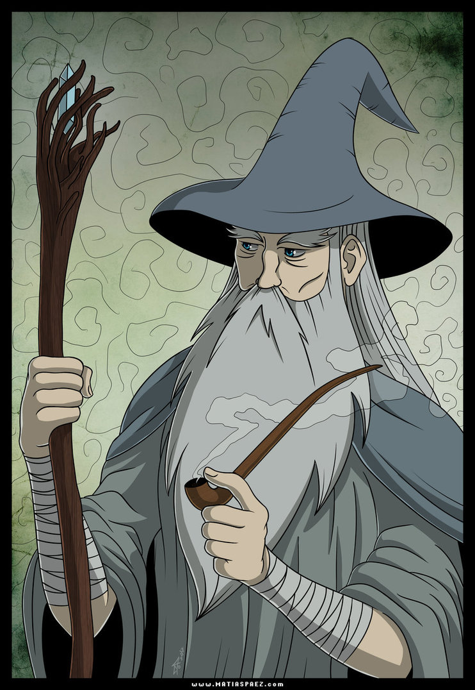

Gandalf The Grey
Warm and eager was his spirit (and it was enhanced by the ring Narya), for he was the Enemy of Sauron, opposing the fire that devours and wastes with the fire that kindles, and succours in wanhope and distress; but his joy, and his swift wrath, were veiled in garments grey as ash, so that only those that knew him well glimpsed the flame that was within. Merry he could be, and kindly to the young and simple, yet quick at times to sharp speech and the rebuking of folly; but he was not proud, and sought neither power nor praise... Mostly he journeyed tirelessly on foot, leaning on a staff, and so he was called among Men of the North Gandalf 'the Elf of the Wand'.